AnyPortrait > マニュアル > 「Transform」モディファイヤでの回転
「Transform」モディファイヤでの回転
1.3.4
「Transform（Controller）」モディファイヤのオブジェクトの回転についていくつかの問題に関するフィードバックを受けました。
v1.3.4から大きく二つにまとめて、問題を解決しました。
1つはアニメーション編集ですでに導入されている「回転角を制限」、もう1つは「ベクトルによる回転」です。
回転角度制限を解除
この機能は、アニメーション編集時に既に存在した機能をそのまま取得されています。（関連ページ）
このページで使い方を簡単に紹介します。
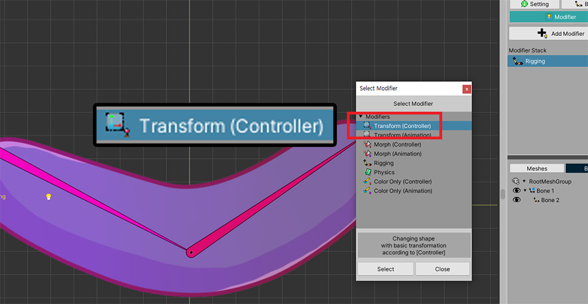
このページで使用される例です。
ボーンがあり、ここにメッシュが接続されています。
「Transform（Controller）モディファイヤ」が適用されており、この状態でボーンを回転させてみましょう。
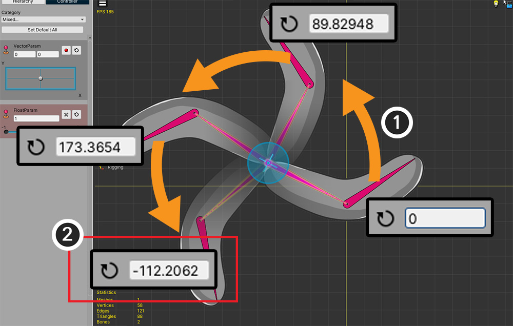
(1) ボーンを選択して、マウスを使用して、反時計回りに回転するように作ろうとします。
(2) しかし、180度を越えた時点で、突然の角度が負の値に変換されることを見ることができます。
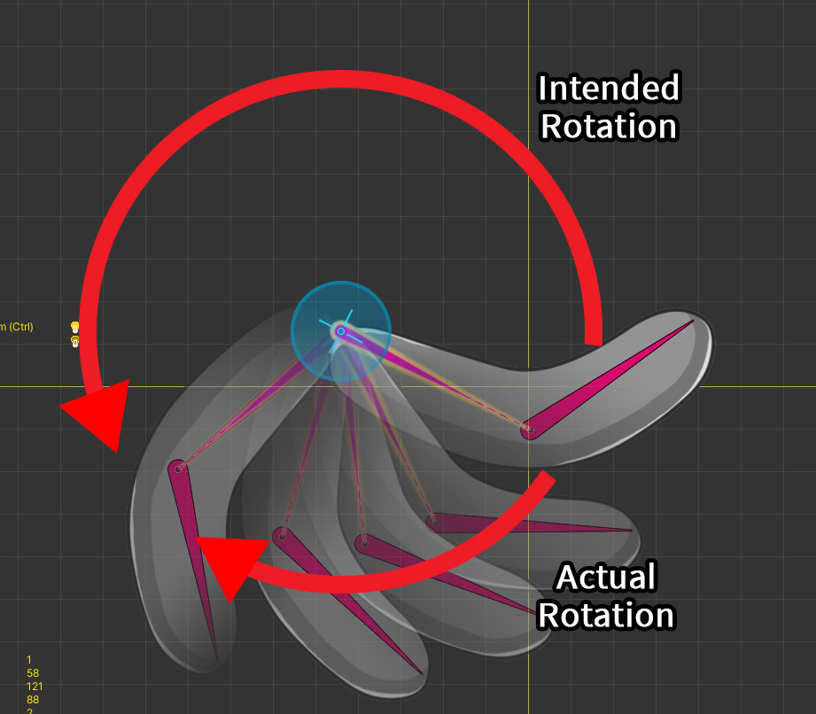
この状態で、制御パラメータとして、ボーンを動かしてみると、意図したのは、反時計回りの回転が、実際には逆に回転してしまいます。
AnyPortraitの回転ツール（Gizmo）に基本的に「回転角度制限」が設定されているからです。
これは、回転ツールを使用して、オブジェクトを回転する場合は、その値が-180〜+180に制限するようにします。
しかし、この場合には、その制限を解除することが必要です。

(1) 右のUIで、「180」ボタンを押して、「無限」の状態に変更します。

(2) 再度骨を反時計回りに回転してみましょう。
(3) ここで、180度を超えても値が増加することを見ることができます。
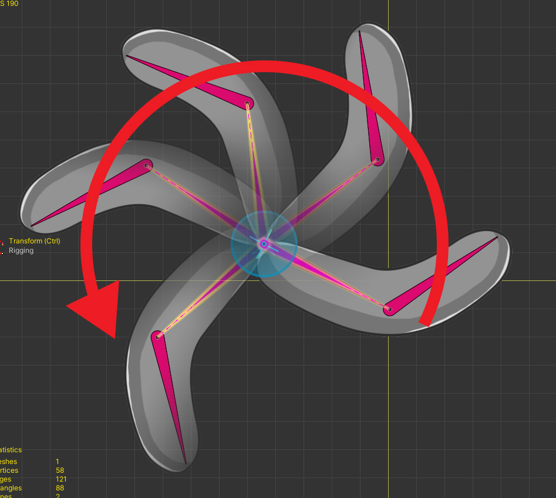
完成された結果です。
意図したとおり、反時計回りに回転することを見ることができます。
ベクトルによる回転
これはやや難しいテーマがあります。
AnyPortraitで「回転値」を補間する際、基本的に「回転角度」をそのまま利用します。
これは、最も明快な方法であるが、次の場合に問題が発生します。
- 角度差が大きい2つ以上のキーを補間する場合
- キーが循環する場合
キーフレームベースのアニメーションでは、上記の状況が発生しません。
しかし、「Vector2タイプの制御パラメータを使用してTransformモディファイヤ」では、上記の条件が満足されてしまうという問題が発生します。
この問題を解決するためには、「角度による回転」ではなく、新しい補間手法が必要です。
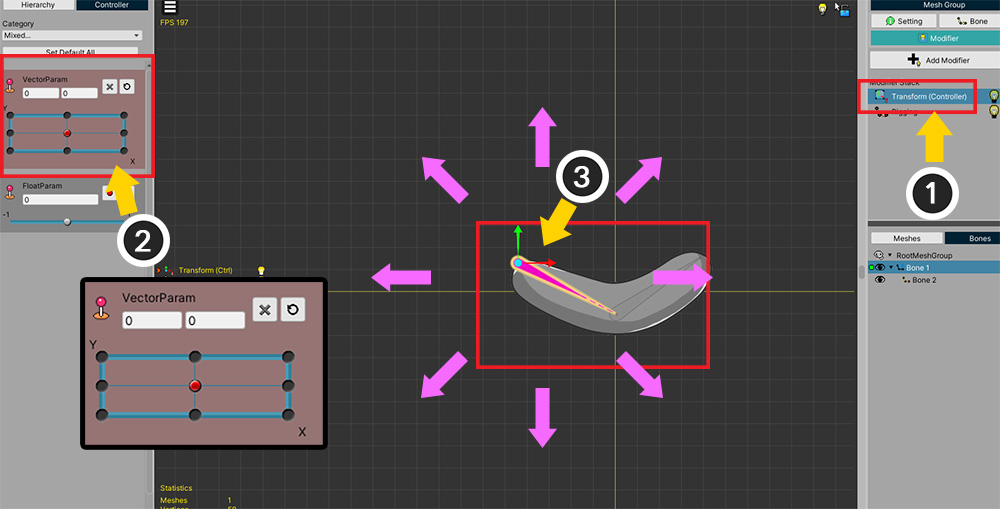
(1) 「Transform（Controller）モディファイヤ」が追加されました。
(2) Vector2タイプの制御パラメータをモディファイヤに登録し、すべての方向にキーを追加しました。
(3) ボーンが制御パラメータに基づいて全方向に移動し、回転するように作ろうとしています。
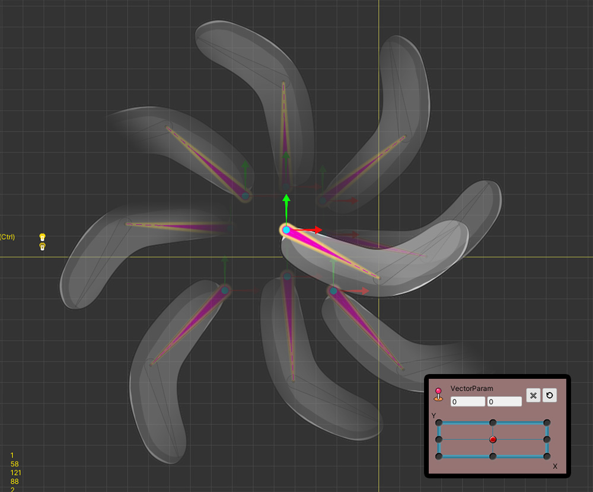
制御パラメータの各方向に合わせて、骨が動くようにしました。
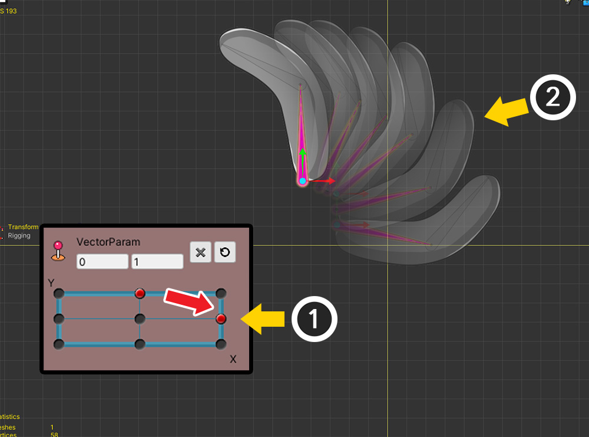
(1) 制御パラメータの値を動かしてみると、(2) ボーンがその方向に合わせて動くように見えます。
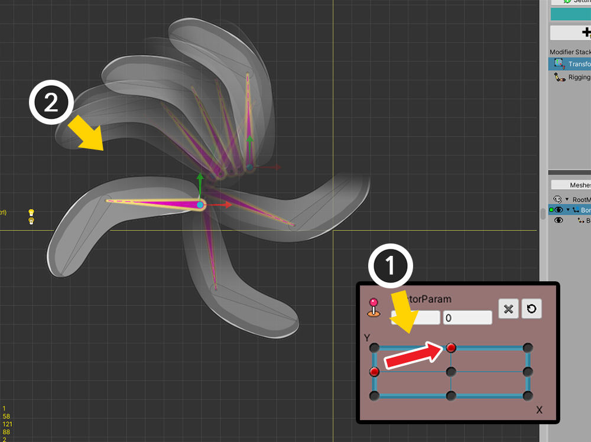
(1) ところで、いくつかの区間では、(2) ボーンが変な方向に回転し、移動することを見ることができます。
この部分が前述した「角度による回転」の問題です。
この問題を解決するために、 「ベクトルによる回転」という新しい手法がv1.3.4に追加されました。
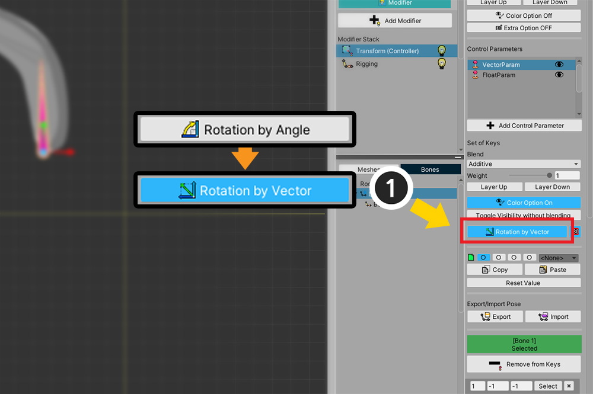
(1) モディファイヤの設定で「Rotation by Angle」ボタンを押して「Rotation by Vector」に変更します。
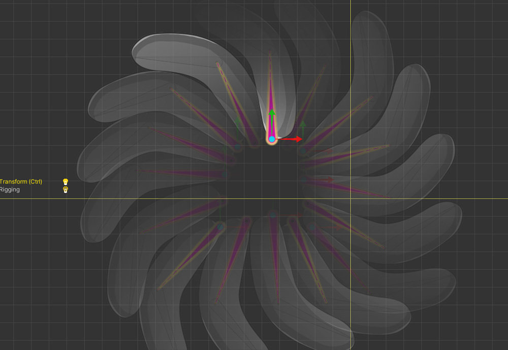
今制御パラメータを動かしてみると、骨が正常に動くことを見ることができます。
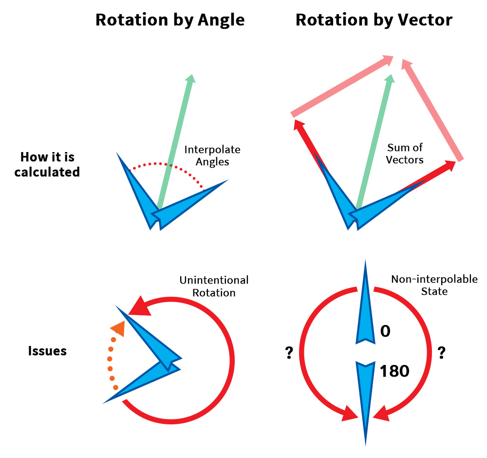
「ベクトルによる回転」方式は、他のアプローチで補間を実行します。
この方式は、「角度」を「ベクトル」に一度変換した後、「重みが適用されたベクトル合計」を計算します。
その後、「ベクトルした結果」を再び 「角度」に変換するプロセスを行っています。
おかげでキーが循環する場合や、2つ以上のキーが複雑に補間される場合にも、「ベクトルし」という直感的な操作を介して値を求めることができるのです。
しかし、この方式が万能ではありません。
それぞれの方式が持つ限界を確認してみてください。
「角度による回転」の欠点
- 2つ以上のキーがある場合、または循環されるキーを補間する場合に、意図していない方向に回転することができます。
「ベクトルによる回転」の欠点
- 二つのキーが正確に180度をなすなど、ベクトル和が0になる場合には補間が不可能な場合があります。
- ベクトル合意の特性上、すべての補間された回転は、180度以内に制限されます。
- 演算方式が複雑であるため、パフォーマンスが少し低下します。